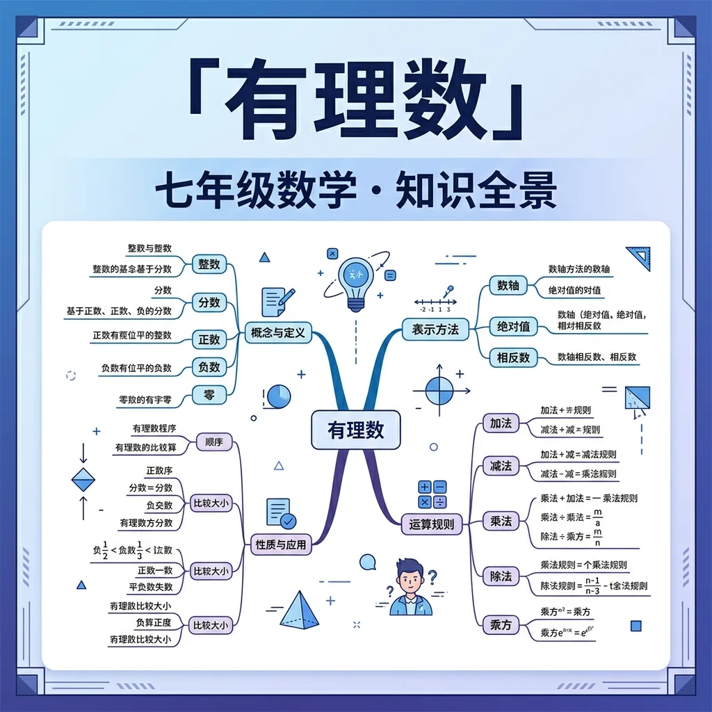

从自然数到分数，再到负数——数的世界比你想象的更广阔

你已经认识了自然数（1, 2, 3, …）和分数（½, ¾, …）。在生活中，我们还会遇到"零下5度"、"亏损3万元"……这些情况需要用负数来表示。
问题来了：自然数、整数、分数、负数……这些数之间有什么联系？它们能统一在一个体系里吗？
数学家把所有"能写成两个整数之比"的数统一称为有理数（Rational Number，其中 rational 来自拉丁语 ratio = 比）。
凡是能写成 p/q（p、q 均为整数，且 q ≠ 0）形式的数，叫做有理数。
注意：分类有两种角度！
有了数，我们需要一种方式来直观展示它们的位置关系。温度计、尺子……这些工具都隐含着一种数的排列方式。
数轴：一条带有刻度、方向和原点的直线，让每个有理数都有"家"。
在数轴上，关于原点对称的两个点表示的数互为相反数。
数轴上，一个数对应的点到原点的距离，叫做该数的绝对值，记作 |a|。
很多同学会混淆：-(-3) = ?，|-3| = ?，这两个运算一样吗？
错误：|−a| = a（这不一定对！）
两个城市之间的距离是绝对值的概念：A在原点，B在-5处，则A到B的距离是 |−5| = 5（公里），距离不分正负！
给你10个数：-5, 0, 3/4, -2/3, 7, -1, 0.6, -3.5, 100, -0.01
完成下面的分类和排序任务：
把这10个数分成"整数"和"分数"两组，各写出来
再把它们分成"正有理数"、"0"、"负有理数"三组
在数轴上标出 -5, -1, 0, 3/4, 7 这5个数的位置（可画在纸上）
计算每个数的绝对值，找出绝对值最大的数和绝对值最小的数
将这10个数从小到大排列
古希腊毕达哥拉斯学派相信"万物皆有理数"——直到发现了无理数（√2），颠覆了他们的世界观
人教版七年级上册第一章课后习题，重点练习数轴画图和绝对值计算
温度（-20°C）、海拔（-430米，死海）、银行存款（+500元）、取款（-200元）
√2 是有理数吗？π 呢？（这将引出下一章：无理数和实数的概念）
有理数是可以表示为两个整数之比的数，即形如 a/b（b≠0）的数，其中a、b为整数。例如，3可以表示为3/1，-0.5可以表示为-1/2。有理数包括整数、有限小数和无限循环小数。例如，1/3=0.333...是一个无限循环小数。生活中，有理数无处不在：商品价格（如9.9元）、温度（如-5℃）、时间（如1.5小时）都可以用有理数表示。数学上，有理数在数轴上对应着密集但非连续的点，任何两个有理数之间都存在无限多个有理数。
有理数可以按符号分为正有理数、负有理数和零；按形式分为整数、分数。整数包括正整数（如5）、负整数（如-3）和零；分数包括真分数（如2/3，绝对值小于1）、假分数（如7/4，绝对值大于1）和带分数（如1¾）。例如，银行存款利息（+3.5%）是正有理数，债务（-2000元）是负有理数。在科学中，pH值（如6.8）、比重（如0.92）都是有理数的应用。特别注意：分母为1的分数（如4/1）就是整数，所有整数都是有理数的特例。
每个有理数都对应数轴上唯一的点。例如，表示1/2时，将单位长度等分两份取右端；表示-2¾时，先标-3，向右移动1/4单位。实际应用如温度计：-10℃到20℃之间每个刻度对应有理数。数学证明中，可用尺规作图精确标出任意分数位置，如通过平分线段找到2/5的位置。关键性质：数轴上任意两点间存在有理数（稠密性），但有理数不能填满整个数轴（存在√2等无理数空隙）。地理中的海拔高度（如-154米）、股票涨跌幅（+2.3%）都是数轴表示实例。
比较法则：①同号数比较绝对值；②异号数正数>负数；③负数绝对值大的反而小。例如比较-3/4与-0.7：先统一为小数-0.75与-0.7，绝对值0.75>0.7，所以-0.75<-0.7。生活案例：-10℃比-5℃更冷，3/4杯水比2/3杯多。特殊技巧：交叉相乘法比较分数，如2/3与3/5比较2×5=10与3×3=9，因10>9故2/3>3/5。工程中比较螺栓规格（如5/8英寸与11/16英寸）、药物剂量（0.3g与1/4g）都需要此技能。注意：比较前建议统一为分数或小数形式。
运算法则：①同号相加取共同符号；②异号相加取绝对值较大数的符号；③减法转化为加法（加相反数）。例如：(-2.5)+1.3=-(2.5-1.3)=-1.2；3/4-(-1/2)=3/4+2/4=5/4。生活应用：收支计算（收入300元+支出150元=+150元）、楼层变化（从-2层上升5层到3层）。科学案例：化学反应物质量增减（+2.7g与-1.2g净增1.5g）。关键步骤：先确定符号，再计算绝对值，带分数需化为假分数运算。常见错误：忽略符号规则导致方向性错误，如温度变化计算。
乘法法则：①同号得正，异号得负；②绝对值相乘。例如：(-0.6)×4=-2.4；(3/5)×(-10/9)=-2/3。除法法则：转化为乘以倒数。如(-4)÷(2/3)=-4×(3/2)=-6。实际应用：速度计算（-30km/h×1.5h=-45km表示反向位移）、药物配比（1.2mg÷0.3=4倍稀释）。科学案例：电阻并联计算（1/R=1/2+1/4=3/4）。特别注意：连乘时负号个数决定最终符号（奇负偶正）；除法中除数不能为零。易错点：倒数求解错误导致连锁错误，如将2/3的倒数误写为3/2而非正确的3/2。
运算顺序：括号→乘除→加减，同级运算从左到右。例如：-3+[1.2×5-(-2)÷0.5]=-3+(6+4)=7。生活案例：购物折扣计算（原价200元打8折再减50元：200×0.8-50=110元）。工程应用：材料损耗计算（总需求=净量×1.05+余量）。技巧：将小数化分数便于计算，如0.125=1/8；复杂算式分步验算。典型错误：顺序错误导致结果偏差，如误将2+3×4算作20而非14；负号遗漏如-3²误算为9而非-9。建议用括号明确优先级，特别是涉及负数运算时。
科学领域：物理中的位移（+5m与-3m的合位移）、化学配平（2H₂+O₂→2H₂O的系数比）。经济场景：股票涨跌（+2.5%与-1.7%的净效应）、汇率换算（1美元≈7.2人民币）。日常应用：烹饪调整（1½杯面粉变为2/3量需乘系数）、运动统计（净胜球数计算）。数学模型：有理数方程解决分配问题，如将120元按3:5比例分配。关键能力：将实际问题转化为有理数运算模型，如用负数表示反向量。注意：应用时需结合情境判断数值合理性，如时间、长度不会为负值。
1. 请列举三个生活中的有理数实例 2. -2/3 和 -0.6 哪个数更大？如何比较？ 3. 计算：(-4) × 0.5 + 2 ÷ (-1/2)
1. 将-1.25表示为分数形式 2. 计算：3/4 - (-0.5) × 2 3. 某地白天温度5℃，夜间下降8℃，求夜间温度
常见错因：①混淆运算顺序导致计算错误；②负数符号处理不当（如-3²=-9误为9）。误区诊断：认为‘两数相除结果一定比被除数小’（如3÷0.5=6反而变大），需通过具体案例纠正概念。建议通过数轴可视化强化符号认知，用生活实例（如债务）理解负数的实际意义。
迁移挑战：设计一个包含有理数四则运算的生活场景问题（如家庭水电费计算），要求至少使用3种运算，并解释解题步骤中的有理数关系。分析不同运算顺序对结果的影响，探究如何验证计算的合理性。